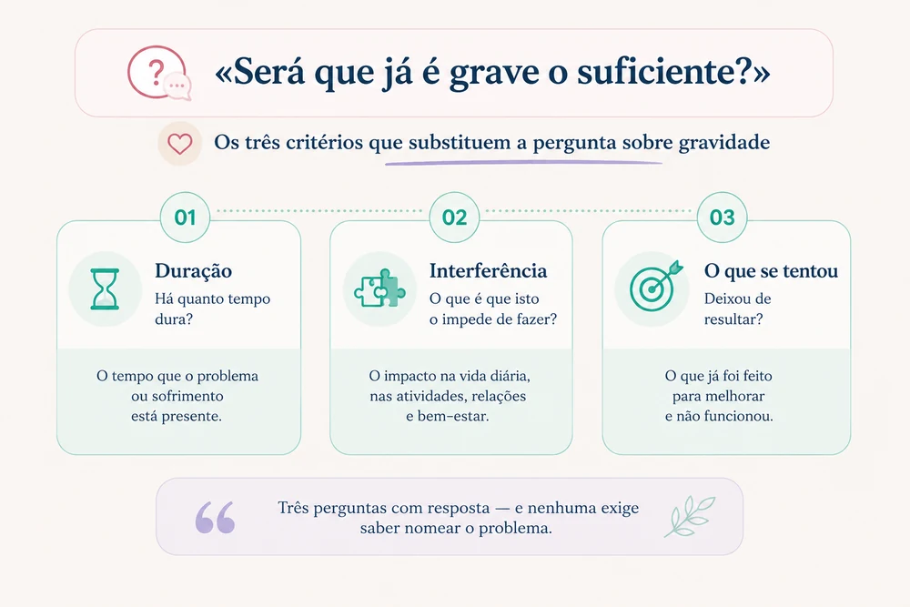

«Será que já é caso para consulta?»
É a pergunta que atrasa tudo. E atrasa porque está mal formulada: o critério para procurar ajuda não é a gravidade — é há quanto tempo dura, quanto interfere, e se aquilo que a família já fazia deixou de resultar.
As cinco áreas em que a psicologia pediátrica ajuda, explicadas em menos de meio minuto. Publicado na rubrica CNS Pediatria responde, no Instagram da equipa.
A situação
Quase todas as famílias que chegam a uma primeira consulta dizem, a certa altura, a mesma frase: «já devíamos ter vindo há mais tempo».
Entre o momento em que uma dificuldade começa e o momento em que alguém procura ajuda passa-se, tipicamente, muito tempo. A investigação sobre o percurso até ao primeiro contacto com um profissional aponta para atrasos que se contam em anos, e não em meses — e o atraso é maior, e não menor, quando as dificuldades começam cedo na vida.
Não é por falta de preocupação. É porque, nesses anos todos, a família está a fazer uma pergunta que não tem resposta possível: será que já é grave o suficiente?
O que se sabe
A gravidade é o critério errado
«Grave» é uma palavra que não se aplica bem ao desenvolvimento de uma criança. Não há um limiar, não há um sinal inequívoco, e ninguém acorda um dia com a certeza de que agora sim. Quem espera por essa certeza espera indefinidamente.
Os critérios que a prática clínica efetivamente usa são outros três, e qualquer família os consegue aplicar em casa:
- Duração. Há quanto tempo dura? Uma dificuldade que se mantém há vários meses, sem melhorar, é diferente de uma que apareceu há três semanas.
- Interferência. O que é que isto o impede de fazer? Uma dificuldade que existe mas não interfere na aprendizagem, nas relações, no sono ou no bem-estar é diferente de uma que impede.
- O que já se tentou. A família e a escola já ajustaram coisas. Resultou? Se o que costumava funcionar deixou de funcionar, isso é informação — e é frequentemente o melhor indicador de que se chegou ao limite do que se resolve sozinho.
Nenhum destes três exige que se saiba nomear o problema. É precisamente por isso que funcionam melhor: não é preciso ter uma hipótese para procurar ajuda. Basta reconhecer que alguma coisa não está a andar.

A crença que mais atrasa
Há um dado da investigação que vale a pena conhecer, porque explica muitos anos de espera. Os pais que interpretam as dificuldades do filho como intencionais — como escolha, birra, teimosia ou falta de vontade — percebem mais obstáculos à procura de ajuda e procuram-na menos, mesmo quando as dificuldades estão dentro do intervalo que justificaria intervenção.
Faz sentido, e é implacável: se o comportamento é uma escolha, não há nada a avaliar — há apenas que insistir mais. E é assim que se passam anos a insistir, com desgaste de parte a parte, numa dificuldade que teria outra leitura e outra resposta.
A pergunta que abre a porta não é «será que ele tem alguma coisa?». É «será que isto é mesmo uma escolha dele?».
Procurar cedo não é medicalizar
É o receio mais frequente, e vale a pena desmontá-lo. A ideia de que procurar ajuda «cria um problema» ou «cola um rótulo» inverte o que costuma acontecer.
Quanto mais cedo se percebe o que está em causa, menos intervenção é necessária. As dificuldades que se prolongam acumulam camadas: à dificuldade inicial junta-se a experiência repetida de falhar, o conflito com os adultos, a ideia que a criança constrói sobre si própria, e por vezes o receio da escola. É esse conjunto — e não a dificuldade original — que torna as situações difíceis de resolver.
Uma criança que chega aos sete anos com uma dificuldade de aprendizagem por perceber precisa de outra coisa aos sete e aos doze. Aos sete, ajusta-se a forma de trabalhar. Aos doze, além disso, há cinco anos de convicção de que não é capaz.
Muitas vezes a resposta é tranquilizadora
Isto diz-se pouco, e devia dizer-se mais: em alguns casos, nas primeiras consultas conclui-se que não há motivo de preocupação. Que o que se observa é próprio da idade, que se explica por uma fase, por uma mudança em casa, por sono insuficiente, ou por uma exigência desajustada.
Isso não é uma consulta desperdiçada. É uma resposta — e frequentemente a mais valiosa. Poupa meses de dúvida, devolve a energia da família a outras coisas, e evita que se continue a olhar para a criança à espera de encontrar alguma coisa.
Vir à consulta não compromete a nada. A avaliação, quando se justifica, é proposta e explicada; a família decide.
O que uma consulta faz que uma conversa não faz
Toda a gente tem opinião sobre a criança — os avós, a vizinha, a professora, o grupo de pais. E quase toda a gente diz coisas contraditórias, o que costuma aumentar a confusão em vez de a reduzir.
A diferença não está em ter mais opiniões. Está em juntar informação de fontes diferentes e ver o que dela decorre: o que se observa em casa, o que a escola observa em contexto de grupo, o que a própria criança mostra numa situação estruturada, e como isso se compara com o esperado para a idade.
É esse cruzamento que distingue uma dificuldade específica de uma variação normal, e uma dificuldade que está no funcionamento da criança de uma que está no contexto em que ela vive. Nenhuma conversa, por mais bem-intencionada, faz isso.
Em que é que a psicologia pediátrica ajuda
Há ainda uma dúvida anterior a todas: se o que se observa é sequer matéria de psicologia. Vale a pena saber que o âmbito é mais largo do que se costuma supor — dos 0 aos 18 anos, e em cinco domínios:
- Emoções que pesam de mais — medos, tristeza, ansiedade.
- Comportamento difícil de gerir — birras, oposição, dificuldade em cumprir regras.
- Desenvolvimento e aprendizagem — atenção, linguagem, autismo, dificuldades específicas.
- Escolhas de percurso — orientação escolar e vocacional.
- A família, quando o que se passa não é só da criança.
Reconhecer a situação numa destas áreas é razão suficiente. Não é preciso saber em qual, nem escolher entre elas — parte do trabalho da primeira consulta é precisamente perceber onde está a questão.
O que fazer
Trocar a pergunta. Em vez de «será grave?», perguntar «há quanto tempo dura, o que é que isto o impede de fazer, e o que já tentámos deixou de resultar?». São perguntas com resposta.
Registar durante duas ou três semanas. Não é preciso nada elaborado: o que aconteceu, quando, o que veio antes e como acabou. Duas semanas de registo esclarecem mais do que meses de impressão, e frequentemente a própria família chega a uma conclusão só de o fazer.
Perguntar à escola o que observa. Sem antecipar a resposta que se espera. A descrição da escola difere muitas vezes da de casa, e essa diferença é ela própria informação relevante.
Falar com o outro cuidador antes. Quando os adultos não estão de acordo sobre se há problema, a decisão fica indefinidamente adiada. Vale a pena ter essa conversa de forma explícita, e trazer as duas versões à consulta — inclusive quando divergem.
Não esperar pelo fim do ano letivo. É o adiamento mais comum e o menos justificado. Esperar por junho significa perder um ano inteiro de ajustes possíveis.
Os sinais que não devem esperar
Há situações em que o critério dos três meses não se aplica, e em que a procura de ajuda deve ser imediata:
- A criança ou o jovem verbaliza que não quer viver, ou que a vida não vale a pena.
- Há comportamentos de autoagressão, ou sinais físicos que sugiram isso.
- Recusa persistente em ir à escola, com sofrimento evidente.
- Alteração abrupta e acentuada do comportamento, do humor, do sono ou da alimentação, sem causa aparente.
- Perda de competências que já estavam adquiridas.
- Isolamento marcado dos pares, ou desistência de atividades de que gostava.
- Referência a acontecimentos que possam ter sido traumáticos.
Em qualquer destas situações, o contacto com o pediatra ou com um serviço de saúde não deve ser adiado. Em situação de urgência, contacte o SNS 24 através do 808 24 24 24 ou dirija-se ao serviço de urgência.
Antes de pedir avaliação — três semanas de observação
Grelha para registar o que acontece, quando, o que veio antes e como acabou, com exemplo de preenchimento. É o registo que transforma a impressão em informação.
Este texto tem fins informativos e não substitui avaliação nem acompanhamento profissional. Cada situação exige uma leitura própria.
Referências
- Alonso, J., & Little, E. (2019). Parent help-seeking behaviour: Examining the impact of parent beliefs on professional help-seeking for child emotional and behavioural difficulties. The Educational and Developmental Psychologist, 36(2). https://doi.org/10.1017/edp.2019.10
- Kessler, R. C., Berglund, P., Demler, O., Jin, R., Merikangas, K. R., & Walters, E. E. (2005). Lifetime prevalence and age-of-onset distributions of DSM-IV disorders in the National Comorbidity Survey Replication. Archives of General Psychiatry, 62(6), 593–602. https://doi.org/10.1001/archpsyc.62.6.593
- Wang, P. S., Berglund, P. A., Olfson, M., Pincus, H. A., Wells, K. B., & Kessler, R. C. (2005). Failure and delay in initial treatment contact after first onset of mental disorders in the National Comorbidity Survey Replication. Archives of General Psychiatry, 62(6), 603–613. https://doi.org/10.1001/archpsyc.62.6.603
Os intervalos entre o início das dificuldades e o primeiro contacto com serviços derivam dos estudos do National Comorbidity Survey Replication, que reportam atrasos medianos de vários anos, maiores nos quadros de início precoce.